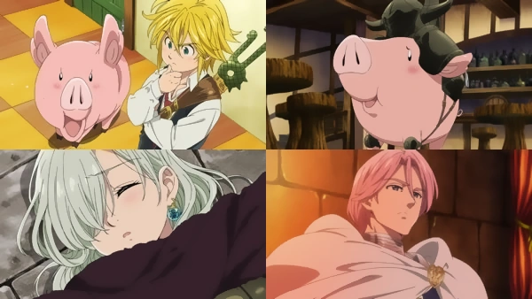
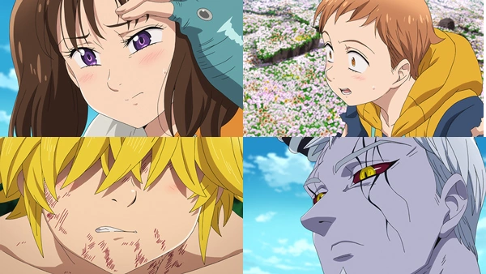
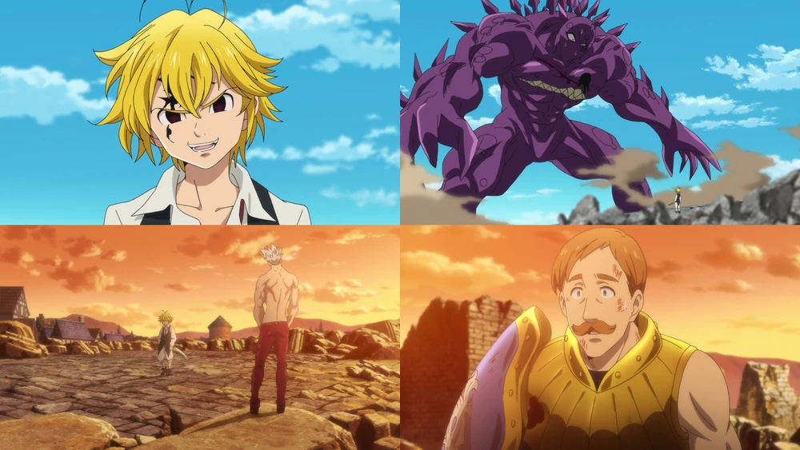

Título: Os Sete Pecados Capitais
Número: Episódio 1, temporada 1.

Descrição: Elizabeth Liones, a terceira princesa do Reino de Liones, está à procura dos Sete Pecados
Capitais, um grupo de Cavaleiros Sagrados extremamente poderoso e perigoso, cujos membros são
considerados criminosos por terem supostamente traído o reino. Ela encontra Meliodas, o dono de um
bar chamado Boar Hat (Chapéu de Porco), acompanhado pelo porco falante Hawk, seu companheiro de
estimação. Ao ser atacado pelo Cavaleiro Sagrado aprendiz Twigo, Meliodas rapidamente supera o
oponente; durante o combate, Meliodas revela a Elizabeth que ele é o Pecado da Ira do Dragão e o
capitão dos Sete Pecados Capitais. Meliodas e Hawk juntam-se a Elizabeth em sua jornada para
encontrar os outros Pecados Capitais a fim de derrotar os Cavaleiros Sagrados, que planejaram um
golpe de estado para derrubar o rei.
Título: Heróis
Número: Episódio 24, temporada 1.

Os Sete pecados Capitais e os santos cavaleiros combinam forças na tentativa de derrotar Hendrickson.
Meliodas, com o apoio de seus amigos e aliados, usa sua técnica final para terminar Hendrickson.
Quando Bartra aparece com Merlin, ele ordena aos santos cavaleiros que restaurem o reino e preservem
seu povo como seu "castigo" por iniciar uma guerra santa. Bartra agradece os Sete pecados capitais
por salvar o reino e proteger Elizabeth. Hawk é revivido como um leitão, muito para uma surpresa. As
coisas retornam ao normal dentro do reino, e um festival é realizado à noite. No dia seguinte,
Elizabeth junta-se a Meliodas, Hawk, Diane, Ban, King, Gowther e Merlin para encontrar o último
membro dos Sete pecados capitais, Escanor, o pecado do leão do orgulho.
Título: Desde que Você Esteja Aqui
Número: Episódio 24, temporada 2.

Ban e Merlin sentem algo diferente sobre Meliodas, enquanto ele domina Fraudrin e menospreza-o como
comandante substituto. Isso força Fraudrin a tentar um ataque suicida que destruiria todos os
Liones, mas ver Griamore perceber que ele se importa com o humano, apesar de fingir ser Dreyfus para
esconder sua presença. Quando Griamore agarra Fraudrin e erige um selo para que apenas eles morram,
o demônio percebe o que motivou a traição de Meliodas no passado e cessa seu ataque enquanto permite
que Meliodas o mate...